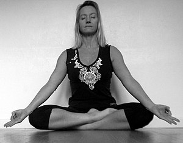
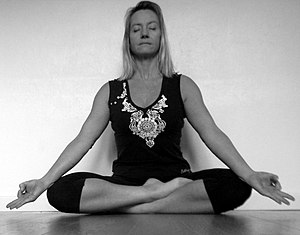

Two sided https://en.wikipedia.org/wiki/Siddhasana


source: Yoga Journal
seated forward fold with straight legs
seated full lotus

source: Yoga Journal
| Current pose: half lotus OR accomplished | Adjacent poses: seated forward fold with straight legs | seated full lotus | |
|
siddhasana Two sided https://en.wikipedia.org/wiki/Siddhasana  |
seated forward fold with straight legs
seated full lotus |